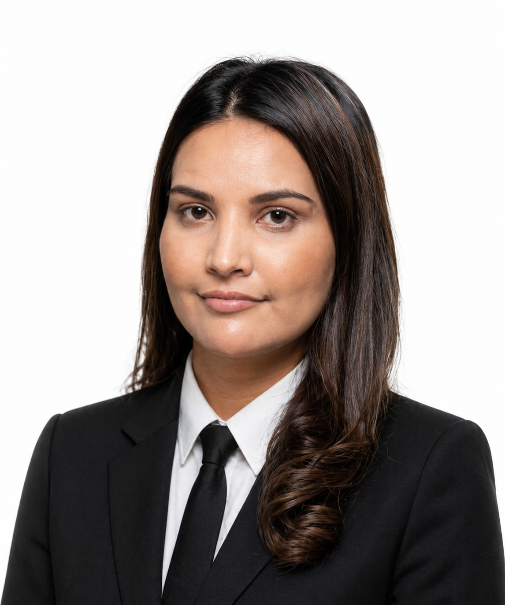

Sohbat Arshad
Sohbat Arshad er grunnlegger av firmaet og arbeider særlig med strafferett og sivilrett. Han er kjent for strukturert sakstilnærming, tydelig prosessledelse og evne til å forklare komplekse juridiske spørsmål på en forståelig måte.
Han har juridisk utdanning fra Universitetet i Oslo og videre faglig fordypning innen prosedyre og tvisteløsning. I møte med klientene legger han stor vekt på tillit, tilgjengelighet og realistiske strategier.